Zero-dependency, animated retro CRT television widget displaying live GitHub statistics across 4 cycling channels.










Step 1: Create .github/workflows/cathoderaystats.yml in your repository:
name: CathodeRayStats
on:
schedule:
- cron: '23 */6 * * *' # Every 6 hours
workflow_dispatch: # Allows manual trigger button in Actions tab
permissions:
contents: write # Needed to commit updated SVG back to repository
jobs:
cathoderaystats:
runs-on: ubuntu-latest
steps:
- name: Checkout repository
uses: actions/checkout@v4
- name: Update CathodeRayStats
uses: Cheese-Cheese/CathodeRayStats@v1
with:
username: ${{ github.repository_owner }}
tv-color: charcoal # charcoal, walnut, beige, mustard, crimson, navy, or #hex
screen-color: white # white, yellow, green, cyan, magenta, orange, or #hex
knob-type: line # line (radial tick mark) or dot (recessed indicator dot)
show-antennas: false # true / false
channel-duration: 4 # seconds per channel
Step 2: Trigger the workflow once manually in GitHub Actions:
dist/retro-tv.svg to your repo.
Step 3: Embed the animated SVG in your README.md:
<p align="center"> <img src="./dist/retro-tv.svg" alt="CathodeRayStats Widget" width="650" /> </p>
By default, the activity heatmap aligns with UTC (timezone-offset-minutes: 0). Pass timezone-offset-minutes in your workflow (e.g. 330 for IST, -300 for EST, -480 for PST, 540 for JST) so the heatmap matches your local calendar day. Look up your offset in minutes with World Time Buddy.